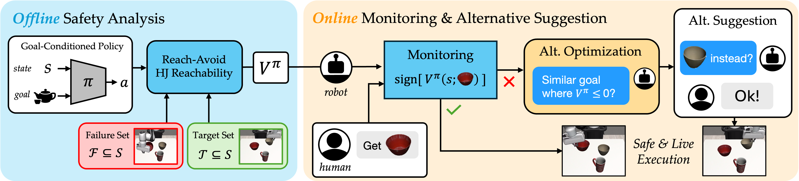

Goal-conditioned policies, such as those learned via imitation learning, provide an easy way for humans to influence what tasks robots accomplish. However, these robot policies are not guaranteed to execute safely or to succeed when faced with out-of-distribution goal requests. In this work, we enable robots to know when they can confidently execute a user's desired goal, and automatically suggest safe alternatives when they cannot. Our approach is inspired by control-theoretic safety filtering, wherein a safety filter minimally adjusts a robot's candidate action to be safe. Our key idea is to pose alternative suggestion as a safe control problem in goal space, rather than in action space. Offline, we use reachability analysis to compute a goal-parameterized reach-avoid value network which quantifies the safety and liveness of the robot’s pre-trained policy. Online, our robot uses the reach-avoid value network as a safety filter, monitoring the human's given goal and actively suggesting alternatives that are similar but meet the safety specification. We demonstrate our framework in simulation experiments with indoor navigation and Franka Panda tabletop manipulation, and with both discrete and continuous goal representations. We find that SALT is able to learn to predict successful and failed closed-loop executions, is a less pessimistic monitor than open-loop uncertainty quantification, and proposes alternatives that consistently align with those people find acceptable.
We want robots to know when they can safely execute a user's given goal and propose safe alternatives when they cannot. Our key idea is to formalize alternative suggestion as a safe control problem in goal space. By solving a goal-parameterized reachability problem offline, we obtain a reach-avoid value function that the robot can use online to find safe but similar goals to the original one the person proposed. We call our overall framework for robots that suggest Safe ALTernativess
Offline, a reach-avoid value network is learned to estimate the safety and liveness properties of a pre-trained goal-conditioned robot policy. Online, a human inputs a desired goal, which is first monitored by our reach-avoid value function. If the input goal satisfies both safety and liveness, then the policy is executed. Otherwise, the robot solves a safe control problem over alternative goals (e.g., objects in the scene) to propose an alternative. If the human accepts, then the robot confidently executes on the new goal.
BibTex Code Here